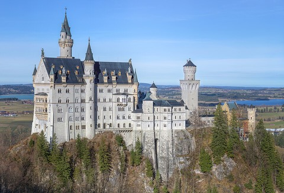

ドイツ旅行 2026
9/14月曜 · ツアー
ノイシュヴァンシュタイン城
予約済みのバンで行くノイシュヴァンシュタイン城の一日ツアー。集合時間と場所は予約確認メールが正で、ここには一般的な流れと注意点だけ書いています。
予約済み・決定済み
- バンで行くノイシュヴァンシュタイン城 一日ツアー（済）。集合場所・時刻は予約確認メールで確認
- 宿泊：AWA Hotel（中央駅前）
一日の流れ（一般的なツアーの場合）
- 07:30頃集合。ミュンヘン発のツアーは中央駅前かカールス広場（Stachus）集合が多く、どちらも AWA Hotel から徒歩5分以内。集合時刻の20分前に。予約のQRコードと身分証を用意
- 08:00出発。高速で南西へ約2時間。途中でリンダーホーフ城やオーバーアマガウに寄るコースもある
- 10:30〜11:00ホーエンシュヴァンガウ着。城はここからさらに徒歩30〜40分の登り（またはシャトルバス・馬車）。マリエン橋が城の定番アングルで、城から徒歩15分。天候が悪いと閉鎖される
- 予約時刻城内は30〜35分のガイドツアーのみで、時間指定制。予約時刻の15分以上遅れると入れないので、30分前には入口へ。城内は撮影禁止。大きなリュックは持ち込み不可
- 13:00ホーエンシュヴァンガウで昼食。時間があれば隣のホーエンシュヴァンガウ城（黄色い城、ルートヴィヒ2世が育った城）の外観
- 15:00出発。ミュンヘンへ戻る。渋滞すると19:00近くになる
- 18:30〜19:00ミュンヘン着。解散場所からホテルは徒歩。夕食はホテル周辺（中央駅南側はトルコ料理・ケバブの店が多く安い）か、ホーフブロイハウス（徒歩20分）
- 夜翌 9/15 の準備：06:50 ホテル発。07:12 の ICE の切符と、帰り 14:21 の切符（D-Ticket なら不要）をアプリで再確認。朝食は駅の売店かホテルで早めに
持ち物と注意 Neuschwanstein

- 靴
- 城までの坂道が長い。歩きやすい靴
- 天気
- 山なので市内より寒い。9月中旬は上着が必要。雨だとマリエン橋が閉鎖されることがある
- 写真
- 城の外観・マリエン橋・アルプ湖は自由。城内は禁止
- 現金
- ホーエンシュヴァンガウの売店やトイレ（有料 €1 前後）用に小銭
ツアー会社に確認すること 出発前に
- 集合
- 場所（住所）と時刻、遅刻時の連絡先
- 入場券
- 城内ツアーの時間枠がツアー代に含まれているか（含まれる場合は現地で受け取る）
- 昼食
- 含まれるか、自由行動か
- 帰着
- 解散場所と時刻の目安
公式サイトの確認（9/12 時点）
各施設の公式サイトで休止・改修・臨時休業の有無を確認した結果です。出発直前にもう一度、各リンク先を見てください。
| スポット | 状態 | 内容 |
|---|
| ノイシュヴァンシュタイン城 | 営業 | 公式（バイエルン城館局）：ガイドツアーのみ、城内撮影禁止、荷物・ベビーカー持込不可。閉鎖区画の案内なし |
| マリエン橋 | 営業 | 2025年に岩盤アンカー交換工事が完了し再開済み。冬季（11〜3月）と悪天候時は閉鎖 |
| 道路 | 注意 | フュッセン付近 B16 の König-Ludwig-Brücke が 2026年5月〜8月上旬に片側交互通行の予定だった。9月は解消見込みだが渋滞の可能性 |
写真のルール（共通） 教会・レジデンツはいずれも個人利用の撮影可、フラッシュ・三脚・自撮り棒は不可。ミサや礼拝中は撮影も見学も控える。新市庁舎の塔とダニエル塔は撮影自由。
画像の出典
写真はすべて Wikimedia Commons の自由ライセンス作品です。アニメの画面は著作物のため掲載していません。
出典：einfach München ノイシュヴァンシュタイン城 · Stadtrundfahrt ツアー概要
{kind=link}